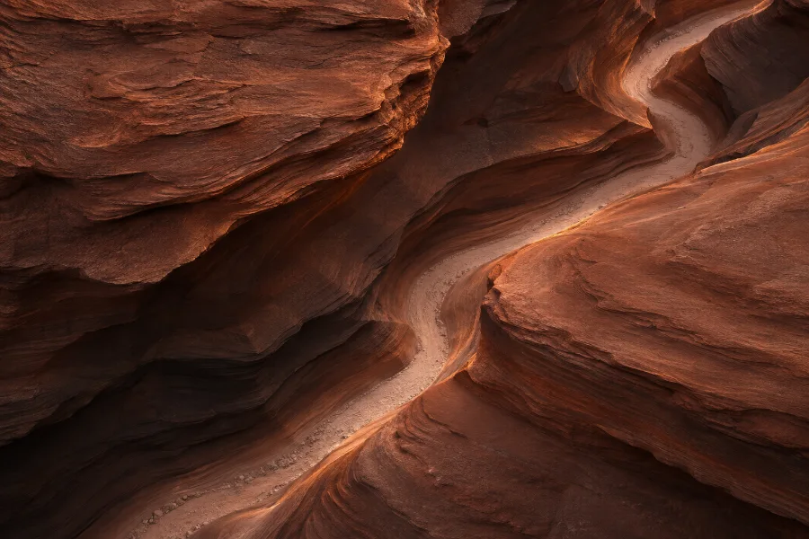

XT5创意外展
CADILLAC / 2025
AUTOMOTIVE
EXHIBITION SPACE
3D VISUALIZATION
AUTOMOTIVE
EXHIBITION SPACE
3D VISUALIZATION
CREATIVE EXHIBITION创意外展 · 三维视觉
把展车放进峡谷
两侧岩壁收窄视野，地貌屏幕把视线引向远处。展车沿着这条视线出现，让 XT5 的全路况主题有了具体的场景。
从谷底到屋顶

峡谷的高差被转化为两层展台。沿岩壁拾级而上，视线从谷底的 XT5 移向屋顶展车，让全路况主题有了一条可以走进去的路线。
从峡谷看到蜂鸟底盘
室外用峡谷呈现路况，室内让底盘总成嵌入同样的岩壁，把全路况的场景落到车辆技术上。
项目影像
PROJECT
XT5 创意外展
BRAND / YEAR
CADILLAC / 2025
CATEGORY
AUTOMOTIVE
EXHIBITION SPACE
3D VISUALIZATION
EXHIBITION SPACE
3D VISUALIZATION